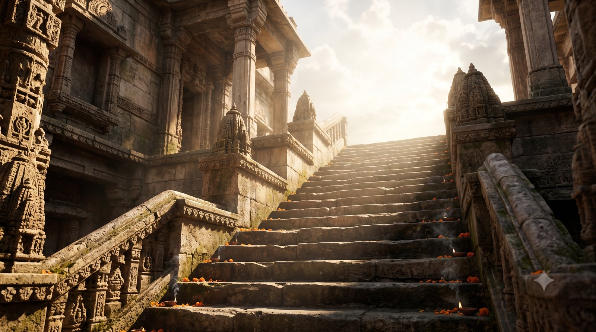
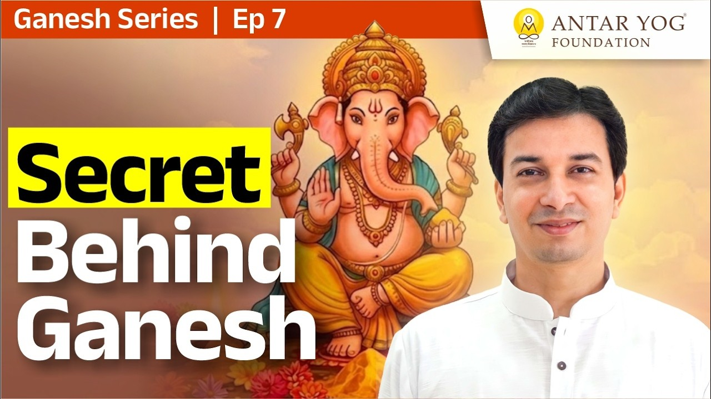

गणेश चतुर्थी आने वाली है। कैलेंडर पर तारीख दिखते ही सबसे पहला काम क्या होता है? नाचना-गाना नहीं, गणपति की बुकिंग!
पर क्या कभी रुककर सोचा है कि जो मूर्ति हम घर ला रहे हैं, उसका रूप कौन तय करता है?
तो गणपति की मूर्ति कैसी होनी चाहिए? आचार्य जी के अनुसार उसका रूप दुकानदार या हमारी अपनी पसंद से नहीं, ऋषियों के वर्णन से आना चाहिए। शुरुआत अपनी रुचि से हो सकती है, पर गणेशोत्सव सजावट की प्रतियोगिता नहीं, नर से नारायण तक की यात्रा है, और मूर्ति उस यात्रा की पहली सीढ़ी है।
हर गणपति की मूर्ति अलग क्यों दिखती है?
किसी के घर दाईं सूंड वाले गणपति आते हैं, किसी के घर बाईं सूंड वाले। कोई लेटे हुए, कोई खड़े।
कोई हाफ पैंट में, कोई पूरी धोती और सोला पहने धनवान रूप में। कोई झब्बा-कुर्ता पहने नेता बने हुए, कोई संत के वेश में, तो कोई बंदूक लिए सेना के सिपाही के रूप में। कोई अमीर जैसे, कोई गरीब जैसे।
अलग-अलग रूप, अलग-अलग रंग। पर यह रूप आता किसकी पसंद से है? ऋषि-मुनियों की, दुकानदार की, या आपकी अपनी ऊर्जा और रुचि की?
इस वर्ष आप जो मूर्ति लाने वाले हैं, उसे किस आधार पर चुनेंगे?
आरंभ कहीं से भी, मंज़िल एक
ऋषि-मुनियों ने शायद आरंभ में यही कहा होगा: जिस रूप में तू देखना चाहता है, पहले उसी रूप में देख। पर अंत में तुझे उसी तक पहुंचना है जो वास्तविक है।
आचार्य जी कहते हैं कि शुरुआत कहीं से भी करो, लेकिन जाना वहीं है जिसका स्वरूप ऋषियों ने वर्णन किया है।
यदि भगवान वैसे ही नहीं हैं जैसा उनका वर्णन है, तो रूप बदलने का कोई अर्थ नहीं। हम यहां अपनी कला दिखाने नहीं आए। ऋषि अपनी कला पहले ही दिखा चुके हैं, हमें उसी का अनुसरण करना है।
यह सजावट की प्रतियोगिता नहीं
गणेशोत्सव न सजावट की प्रतियोगिता है, न कलाकारी की। तो फिर यह है किसलिए? नर से नारायण तक जाने के लिए, यानी मनुष्य से परमात्मा तक की यात्रा (the journey from the human to the Divine)।
ऋषियों ने जिस परमात्मा के दर्शन किए, उन्होंने जैसा स्वरूप देखा, हमें वही वर्णन चाहिए। गणपति कोई मनुष्य नहीं हैं जिन्हें हम अपनी मर्ज़ी से कपड़े पहनाएं। उनका रूप ऋषियों की अनुभूति से जन्मी कल्पना है।
इसलिए हमें उनकी कल्पना से चलना है, अपनी कल्पना से नहीं।
अपनी कल्पना पहले दिन, पहले साल के लिए ठीक है। पर दूसरे साल से वही रूप आना चाहिए जो मूल रूप में दिया गया है।
निराकार तक पहुंचने की सीढ़ी
निराकार का अर्थ है वह परमात्मा जिसका कोई रूप नहीं (the formless Divine)। हमें अंततः उसी तक पहुंचना है।
पर निराकार को ऋषियों ने देखा है, हमने नहीं। इसलिए उन्होंने जिस साकार (रूप सहित) स्वरूप का वर्णन किया, वही हमारी सीढ़ी है। जब हम साकार और निराकार, दोनों की पूजा ज्ञान के साथ करते हैं, तभी उस अवस्था तक पहुंच सकते हैं।
तो क्या लाभ है गणपति को टी-शर्ट और हाफ पैंट पहनाकर, स्कूल बैग टांगकर, फिर सेना की वर्दी पहनाने का? उनका वर्णन तो ऐसा है ही नहीं।

फिर गणपति ही क्यों?
कोई गणपति को साईं बाबा के रूप में बना देता है, कोई किसी और रूप में। पर गणपति का वर्णन तो कुछ और है। अगर साईं बाबा ही चाहिए, तो सीधे साईं बाबा की ही पूजा करो ना!
साईं बाबा भी परमात्मा का रूप होंगे, ज्ञानेश्वर भी होंगे, इसमें कोई मनाही नहीं। पर यह कला की प्रतियोगिता नहीं है। यह कुछ और ही है।
क्या हमारी पूजा हमें आगे ले जा रही है, या हम केवल अपनी रचनात्मकता दिखा रहे हैं?
बालवाड़ी से पहली कक्षा तक
पहला साल ठीक है। पर बालवाड़ी में बैठा बच्चा कभी तो पहली कक्षा में जाएगा। तब उसे मूल रूप अपनाना होगा, पहले ऋषियों की कल्पना, फिर उस कल्पना का अर्थ। उसके बाद ही आगे की यात्रा शुरू होती है।
आचार्य जी बताते हैं कि मूर्ति शून्य से छह वर्ष की आयु के लिए है।
मूर्ति साधना की पहली सीढ़ी है, अंतिम नहीं। हर नाम, हर रूप का एक प्रतीकात्मक अर्थ है। उसे समझना ही असली पूजा की ओर बढ़ना है।
मुख्य बातें
- गणपति की मूर्ति का रूप ऋषि-मुनियों के वर्णन से आना चाहिए, दुकानदार या हमारी पसंद से नहीं।
- शुरुआत अपनी रुचि से हो सकती है, पर पहुंचना उसी स्वरूप तक है जो ऋषियों ने देखा।
- गणेशोत्सव सजावट या कला की प्रतियोगिता नहीं, नर से नारायण तक की यात्रा है।
- निराकार तक पहुंचने के लिए साकार की पूजा ज्ञान के साथ करनी है।
- मूर्ति साधना का पहला कदम है; आगे बढ़ने के लिए उसका प्रतीकात्मक अर्थ समझना ज़रूरी है।

आगे पढ़ें

कितने लोगों ने ऐसा हाथी देखा है जो मनुष्य की तरह चलता हो? और कितने हाथी चूहे की सवारी करते हैं?

क्या आज भी आपके मन में गणेश की छवि केवल सूँड वाले, मोदक खाने वाले देवता की है? आचार्य उपेंद्र जी इस प्रवचन में प्रसिद्ध गणेश जन्म कथा की परतें खोलते…

हर साल गणपति चतुर्थी को आते हैं और अनंत चतुर्दशी को विदा होते हैं। हम उत्सव मनाते हैं, मोदक बनाते हैं, विसर्जन करते हैं।